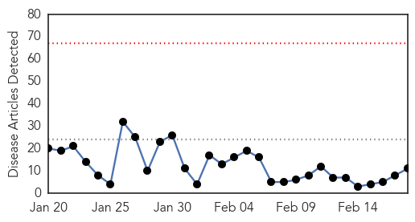
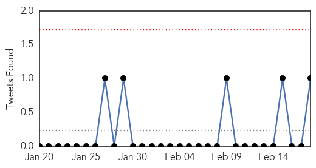
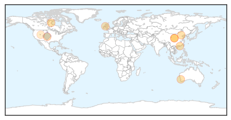
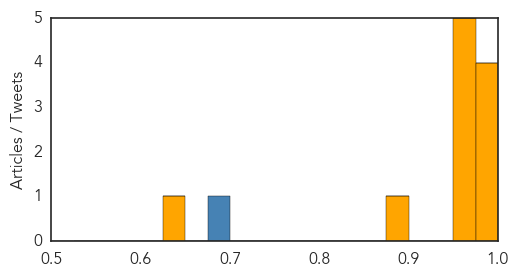

Toggle navigation
Early Warning
Daily Alerts
Influenza
Feb 18, 2015
Compare to:
-
Dengue Fever
Hemmorhagic Fever
Mold/Fungal Infection
Meningitis
Pertussis / Whooping Cough
Middle East Respiratory Syndrome
Cholera
Hepatitis
Chikungunya
Yellow Fever
Bubonic Plague
West Nile Virus
Swine Flu
Ebola
Measles
Unknown
Mumps
30 Day Trends
Web: 0
alerts
, 0
warnings
Twitter: 0
alerts
, 0
warnings
Top Articles:
0.997
Flu season not as severe as other years
0.985
Historical accounts detail wave of flu deaths in Oklahoma during 1918 pandemic
0.982
'No concern' over scabies spreading to more schools
0.982
Hong Kong influenza death toll at 228 after 18 die in one day
0.961
'Bird flu protection' given by seasonal flu vaccine
0.959
Flu Shot Protects against New Strain H7N9 — Naharnet
0.955
Flu shot protects against new H7N9 strain: study
0.955
Flu shot protects against new H7N9 strain: study
0.954
More health-care workers getting flu shots
0.875
Latest Newry News, Newry Sport and Newry Business for Newry City
0.650
More diseases in Davis County
Top Tweets:
0.680
RT: @influenza_bio We can help! @WNEW: Military medical unit from Md. packing up 4 mobile Ebola testing labs in Liberia h…
Web/News Articles

Tweets

Article Locations

Article Confidences
